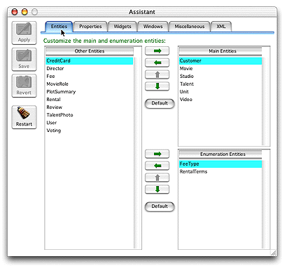

| PATH |

The tasks of creating a Direct to Java Client application are similar to writing a Direct to Web application. There are four steps:
Further information about the last two optional steps is given below.
The Direct to Java Client Assistant is the easiest way to customize a Direct to Java Client application. It is an easy-to-use tool that is integrated into a running client application. It allows you to perform the most common customizations, directly test them while the application is running, and save them in your project. The Direct to Java Client Assistant is very similar in concept to the Direct to Web Assistant even though the two assistants look and behave differently.
Figure 7-3 The Direct to Java Client Assistant
Writing custom rules is another way to customize your Direct to Java Client application. It's very similar to writing custom rules for Direct to Web applications. As with Direct to Web applications, all the information about how to configure a Direct to Java Client application is stored in the form of rules. The default rules generate the default Direct to Java Client application. Adding new rules that override or supplement the default rules is an easy-to-maintain approach that doesn't interfere with your use of the assistant. You write rules with the Rule Editor, the same application used for writing rules in Direct to Web applications. For more information, see "Developing a Direct to Web Application" (page 57).
There are also some more specialized ways to change the way Direct to Java Client works. For example, you can get the precise user interface layout for a particular window by freezing the interface and supplying a nib file (created in Interface Builder the way you do for regular Java Client applications). As another example, Direct to Java Client provides hooks you can use to introduce custom commands into an application's main menu. Additionally, you can also subclass Direct to Java Client classes to change the way an application performs a particular task or to add new functionality to the default set.
Direct to Java Client was designed to be flexible and extensible, so there are numerous customization approaches. There are simple approaches that are code-free and maintainable (using the assistant and writing custom rules), there are more specialized approaches that are complex and require a lot of work, and there's everything in between. You can achieve almost any effect that you need. It's generally simply a question of which technique to use and what trade-offs you're willing to make.
© 2001 Apple Computer, Inc.